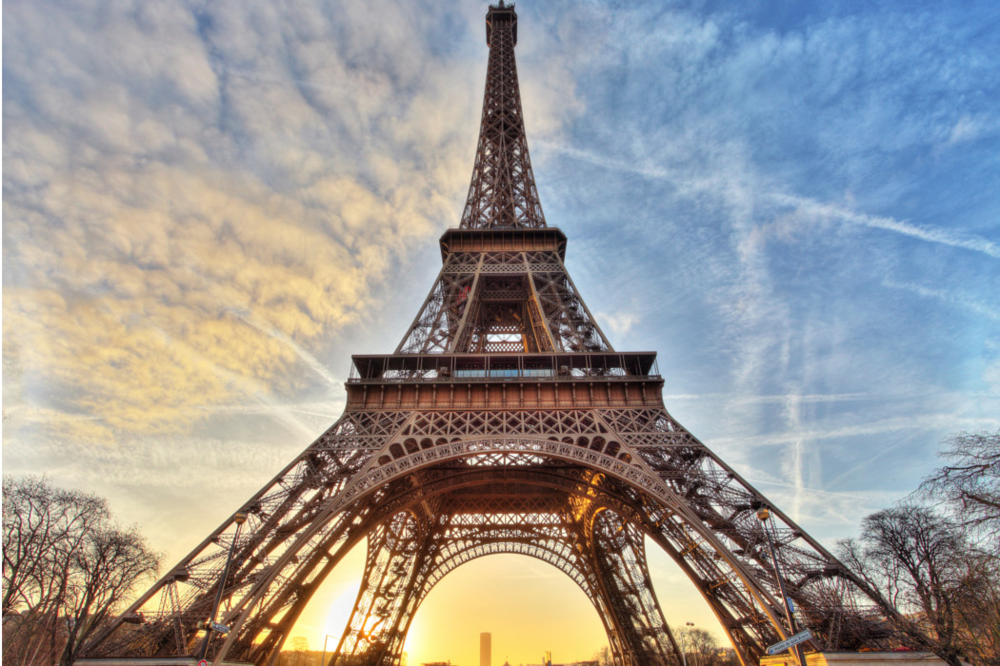

La Torre Eiffel pudo haber estado en Barcelona si el proyecto no hubiese sido denegado por España. Antes que ir a París, Eiffel presentó su proyecto en diversas ciudades, entre las que se destaca Barcelona y en todas fue rechazado por no ser coherente con el diseño de sus edificios. España se perdió la oportunidad de tener este gran monumento que hoy está valuado como seis veces más costoso que el Coliseo de Roma.

La torre Eiffel (tour Eiffel, en francés), inicialmente llamada tour de 300 mètres (torre
de 300 metros), es una estructura de hierro pudelado diseñada por los ingenieros Maurice
Koechlin y Émile Nouguier, dotada de su aspecto definitivo por el arquitecto Stephen
Sauvestre y construida por el ingeniero francés Alexandre Gustave Eiffel y sus colaboradores
para la Exposición Universal de 1889 en París.
Situada en el extremo del Campo de Marte a la orilla del río Sena, este monumento parisino,
símbolo de Francia y de su capital, es la estructura más alta de la ciudad y el monumento
que cobra entrada más visitado del mundo, con 7,1 millones de turistas cada año. Con una
altura de 300 metros, prolongada más tarde con una antena hasta los 324 metros, la torre
Eiffel fue la estructura más elevada del mundo durante 41 años.
Fue construida en dos años, dos meses y cinco días, y en su momento generó cierta
controversia entre los artistas de la época, que la veían como un monstruo de hierro. Tras
finalizar su función como parte de las Exposiciones Universales de 1889 y 1900, fue
utilizada en pruebas del ejército francés con antenas de comunicación, y hoy en día sirve,
además de atractivo turístico, como emisora de programas radiofónicos y televisivos.
Gustave Eiffel
La torre no es la única creación de Gustave Eiffel. Este apasionado y auténtico genio ha sabido superar sus propios límites para legarnos monumentos como la Cúpula del Observatorio de Niza, la estructura metálica de la Estatua de la Libertad o incluso el Puente de Hierro de Burdeos.
Restaurantes
Para la Exposición Universal de 1889, cuatro majestuosos pabellones de madera construidos por Stephen Sauvestre ocupaban la plataforma del primer piso. Cada restaurante tenía una capacidad máxima de 500 personas.
La Torre en el Mundo
Era la torre más alta del mundo en el momento de su construcción y ha sido reproducida en diferentes lugares del mundo. Aunque las grandes torres de hoy la superan en altura, ella sigue siendo única.
Iluminaciones
Inaugurado el 31 diciembre 1985, diseñado por Pierre Bideau, ingeniero en iluminación, compuesto por 336 proyectores, equipados con lámparas de sodio de alta presión de color amarillo-anaranjado.
Esta iluminación, que fue un éxito mundial y unánime, marcó el punto de partida, en París y en las grandes ciudades de Francia y del mundo, de un renacimiento de la puesta en valor nocturna de los monumentos.
haces de luz, dirigidos de abajo hacia arriba, iluminan la torre Eiffel desde el interior de su estructura. Desde 1958, sustituyendo los 1.290 proyectores en servicio que iluminaban la Torre desde el exterior, realzan la delicada estructura metálica del monumento e iluminan los lugares transitados por los visitantes de noche hasta la hora de cierre de la torre. Además del aspecto estético, también es necesario para la seguridad del funcionamiento nocturno de la Torre.
Dato Curioso
Para evitar la corrosión del material, el edificio se pinta cada cinco años, razón por la cual se ha cambiado de color en muchas ocasiones. El color de la torre se basa en tres tonos, con el más claro se pinta la parte superior y va siendo progresivamente más oscuro hacia abajo. Si bien originalmente estaba pintada de color marrón rojizo. En el primer piso de la torre, los visitantes pueden votar cuál será el próximo color.
Aunque al principio los ciudadanos franceses la rechazaban ya que les parecía una estructura horrible, hoy en día es el símbolo de Francia con una media de casi 6 millones y medio de visitantes anuales, una cifra más elevada que la cantidad de habitantes de muchos países, por ejemplo, Costa Rica. Es el cuarto monumento más visitado del mundo detrás de la Catedral de Nôtre-Dame (recientemente incendiada) la Gran Muralla China y la Opera House de Sídney.
Originalmente la Torre Eiffel estaba pensada para ser destruida veinte años después de la Exposición Universal. Pero al instalar la Armada Francesa una antena de radio en su punto más alto con fines de comunicación, se canceló su demolición después de la Exposición universal de 1900. A partir de la década del 60, se convirtió en uno de los principales atractivos turísticos. Durante la ocupación nazi de París (1940-44) la antena se utilizó para la difusión de la televisión alemana.